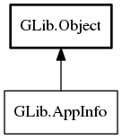

AppInfo
Object Hierarchy:
Description:
AppInfo and AppLaunchContext are used for describing and launching applications installed on the system.
As of GLib 2.20, URIs will always be converted to POSIX paths (using get_path ) when using launch even if the application requested an URI and not a POSIX path. For example for an desktop-file based application with Exec key `totem u` and a single URI, `sftp://foo/file.avi`, then `/home/user/.gvfs/sftp on foo/file.avi` will be passed. This will only work if a set of suitable GIO extensions (such as gvfs 2.26 compiled with FUSE support), is available and operational; if this is not the case, the URI will be passed unmodified to the application. Some URIs, such as `mailto:`, of course cannot be mapped to a POSIX path (in gvfs there's no FUSE mount for it); such URIs will be passed unmodified to the application.
Specifically for gvfs 2.26 and later, the POSIX URI will be mapped back to the GIO URI in the File constructors (since gvfs implements the Vfs extension point). As such, if the application needs to examine the URI, it needs to use get_uri or similar on File. In other words, an application cannot assume that the URI passed to e.g. new_for_commandline_arg is equal to the result of get_uri. The following snippet illustrates this:
GFile *f;
char *uri;
file = g_file_new_for_commandline_arg (uri_from_commandline);
uri = g_file_get_uri (file);
strcmp (uri, uri_from_commandline) == 0;
g_free (uri);
if (g_file_has_uri_scheme (file, "cdda"))
{
// do something special with uri
}
g_object_unref (file);
This code will work when both `cdda://sr0/Track 1.wav` and `/home/user/.gvfs/cdda on sr0/Track 1.wav` is passed to the application. It should be noted that it's generally not safe for applications to rely on the format of a particular URIs. Different launcher applications (e.g. file managers) may have different ideas of what a given URI means.
Namespace: GLib
Package: gio-2.0
Content:
Static methods:
Methods:
Inherited Members:
All known members inherited from class GLib.Object